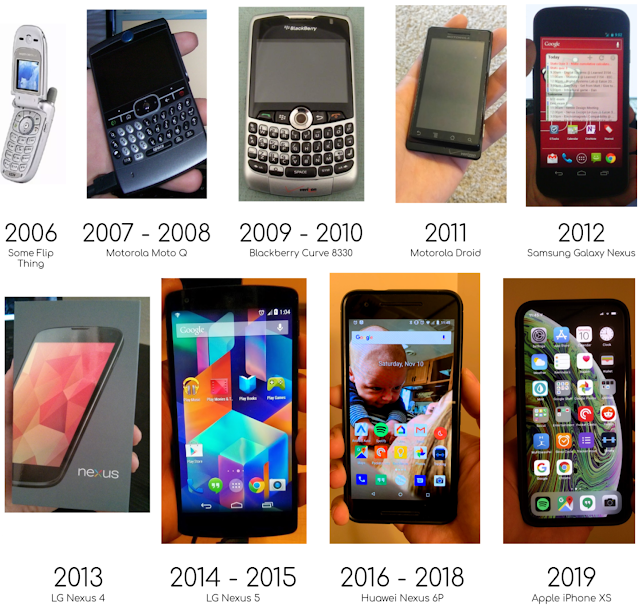

Motto: BAAAAAAH
 |
|---|
| This graphic took longer to make than it was worth - the dates are (obviously) approximations |
{kind=link}
Some history (if you don’t care about history and just want to read about Aaron & the iPhone, skip down to after the next photo in this post):
My very first phone I got sometime around my junior year of high school. It was a flip phone with a VGA camera (in today’s terminology, that’s 0.3 megapixels). I thought it was so cool. If you took someone’s photo with it, you could usually tell who it was! It had ringtones to pick from, you could call your friends on it, or you could text them using the T9 buttons (but who texts?). My first week with the phone it flew out the window of a moving vehicle onto a gravel road. It survived. Having this piece of technology of my very own was EXTREMELY exciting. I started reading about phones and other pieces of consumer technology using my parent’s computer on Mozilla Firefox.
After a year and a half, my parents got me my first smartphone - the Motorola Moto Q. It had a huge 320x240 display and a 1.3 megapixel camera. You could technically install 3rd party software on it, but it was pretty much impossible to do so.
Another year and a half went by. I was about to enter my second year of college when I got my first (and only) Blackberry 8330. The blackberry was different. The screen was bigger (2.5 inches!). The rollerball was a revolution in user inputs. The keyboard was great. I don’t want to brag but I did get to the point where I could text blindly under my desk in class without the need to proofread. There were 3rd party applications. I remember I even got one or two, but I don’t remember what they were or why you’d want them. At the time, the Blackberry was king of the crop (with the possible exception of the Palm Treo, which I never owned).
Next was the big one… the biggest jump from one phone to the next. It didn’t happen between the dumb flip phone and the “smart’ Moto Q, it happened between my Blackberry and my first Android phone - the Motorola Droid. This was, and maybe still is, my favorite phone I’ve ever had. It was incredible. It took photos that looked like photos. Its 5MP camera had a flash! It had an internet browser that looked kinda like the actual internet. It had GOOGLE MAPS and GPS! It had a proper headphone jack (RIP). It had a HUGE (3.7”) touch screen, AND a slide-out keyboard so I wouldn’t have to rely on any finicky on-screen keyboards. People weren’t sure how those would play out yet at the time. I distinctly remember when my PlayStation 3 was still new, yet my cousins and I took turns playing with their new phones more than the PlayStation. They were just unlike anything anyone had ever seen before (other than the iPhone, but who could afford an iPhone - they were like $600! for a phone!). This represented a jump in phone technology that I think hasn’t really been replicated since, and may never be. Suddenly a phone went from being just a phone to being a phone, a GPS, a camera, a gameboy, a flashlight, and a Google machine.
My 3rd year in college I got the Samsung Galaxy Nexus. It had an even bigger, even sharper screen, that was curved somewhat for no reason. It was slightly faster, but otherwise it wasn’t much of an upgrade. The hardware was kind of crap, though, even at the time. It felt like you were about to break it constantly. Samsung forced some crapware onto it and permanently gave me a grudge against Samsung.
At Google I/O 2012 Google announced their cheap-but-good LG Nexus 4! I bought it as soon as stock was available. It had a nifty pattern on the back. It had wireless charging (THE FUTURE!). It’s camera still sucked by modern standards, but was approaching okay? It was a well-built phone, but was quickly overshadowed by its successor.
The LG Nexus 5 was incredible. It felt like a true step up in a way that the previous two didn’t. It had a massive 5 inch screen. It had a no-joke HD (1920x1080) screen. It had an 8MP camera, with (I think?) optical image stabilization. It was fast enough to play some real games. This phone was a legend. It is tied with the next one on this list as my 2nd favorite phone (for the time) I ever owned.
The year after the Nexus 5, Google came out with the Nexus 6… which I didn’t buy. It was a full 6-inch screen. It was also 1440p, which was unheard of at the time. I thought it was overkill, and the hardware looked suspect. I just couldn’t convince myself to pull the trigger. The Huawei Nexus 6p that came out the next year, however, put me RIGHT back on course. It had everything. It had a bigger screen than my Nexus 5, but wasn’t ludicrously wide and awkward like the Nexus 6. It has USB-C (which I still love). It had stereo front-facing speakers. It had a fingerprint reader. It had Google’s first “as good as the iPhone” camera, that still holds up to this day. It had a metal body, which unfortunately meant wireless charging wasn’t a thing, but this thing screamed premium… which is good because I didn’t see any good reasons to pick up any of Google’s next three years worth of phones. The Pixel phones seemed fine, but not overwhelmingly good, and they did away with the cheap pricing. After 3 years with the Nexus 6P, it was starting to hang up, drag in-between tasks, and die after a couple of hours away from a charger. After 1131 days with the Nexus 6P, I decided it was time to upgrade… but there just wasn’t any Android phones on the market looked interesting…
{kind=link}
Ever since I saw the all-screen iPhone X in person, I’ve not been interested in anything with bezels. Several of my friends have that phone, and it got glowing reviews across the board. I saw pictures from its camera that looked genuinely great. Combine that with the apparent aging of my Nexus 6P… and it finally happened. Last Sunday I went Apple. I got an iPhone XS.
I’ve had it for 6 days now and I’m still getting used to it. It’s not interesting to stress things about it that are usually true of all any phones, so I’ll do that quickly here: it’s crazy fast, its battery is so good, its camera is better than any other phone camera I’ve ever seen, it feels like the future.
I can’t go back to bezels. The phone is physically smaller than my old one, but its screen isn’t. The notch is not something I notice, nor has it ever been. It reminds me of the “flat tire” on my old Moto 360 watch. It just goes away after looking at the screen for more than 3 seconds.
Apple’s “Health” app is so, so much better than the Google Fit app. This was honestly the thing that made me most excited about switching, and I’m not disappointed. The Health app actually gives users a reason to open it, which in turn actually gives developers incentive to use it. Google Fit had integration with food tracking apps, but seeing caloric intake anywhere was basically impossible. I could write an entire Column about my disappointment with Google Fit if I thought anyone in the world other than me would find it interesting. The Health app is great & makes me wish I had an Apple Watch.
Speaking of Health - it is neat that all my historical nutritional data & fitness data pulled over from when I used MyFitnessPal and Strong on Android into the Health app. I didn’t start from zero, which made me very happy. Related, but the Life Tracker doesn’t work with the Health app in the same way it works with Google Fit. Not yet, at least.
Face ID is a delight. It’s basically like not having security on your phone at all. It doesn’t feel like you’re ever intentionally unlocking it - it just becomes unlocked on its own. The fingerprint was always a very dedicated gesture. I was aware of every time I used it on my old device. It’s a known trope that you have to trade security for convenience or convenience for security… but this is the least intrusive security measure I’ve ever experienced.
The camera is great. The VIDEO camera in particular creates videos that look phenomenal. Every video shot on my Android phones pales in comparison. There was a software stabilization on Android videos that caused the resulting footage to look “jello-y”. That hasn’t happened on the iPhone yet. Portrait mode and Memojis and the like are neat, for whatever they’re worth.
Speaking of pictures - the process of taking a photo & sending it to someone is so, so much faster on iOS than it ever was on Android. I’m not saying that Android’s process was complicated, it just always took forever to load the sharing menu. The first time I wanted to send a photo of something I was looking at to someone with my new phone I was blown away by how quickly I accomplished doing it.
Having Garage Band and iMovie on your phone is pretty neat. I haven’t done anything with them, but the one thing I like most about Apple is their focus on giving customers a way to be creative. You can make music or edit videos on your iPhone. Even when you take a screenshot you get the option to annotate it, right there. Little things like that are nice!
Going back to wireless charging is nice - although it seems like my wireless charging pad is somewhat spotty. I’ll set it down & hear it start to charge, but come back an hour later to find it not charging for whatever reason. It’s like it slides off the sweet spot, but nothing moved.
Apps on iOS look better than apps on Android. They look better and the function better. Every single app I’ve installed on my iPhone that I used to use on my Android devices has been better on the iPhone. LastPass in particular is incredible to use on iOS 12. It made logging into my various applications almost fun. Mint looks better. MyFitnessPal looks better.
My car integrates better with the iPhone. The little readout on the display says what’s playing. Also it’s nice that every accessory in the world is designed specifically for this phone. That’s nice.
Oh, and the phone’s compass points north. It’s funny how little things like that make a difference. On every Android phone I ever owned functioned like Jack Sparrow’s compass.
But not everything is better with an iPhone.
I’m not thrilled to be using lightning cables. For the past year, my phone, laptop, GoPro, Nintendo Switch, and wireless headphones (thanks to an adapter I permanently stuck on there) all could be charged by the same cable. Now if I’m travelling, I need to think about which cable(s) to bring. Plus our cats are addicted to Apple cables specifically and have killed several.
Some apps I bought on Android are way, WAY more expensive on iOS. I bought a weightlifting app called “Strong” on Android for 5\. On iOS, Strong is a subscription-based application that's 5 each month. Or you can just buy it for life for $99. That sucks. Same goes with the #1 sleep analysis apps on each platform. “Sleep as Android” was cheap. The iOS “Sleep Analysis” app is not.
Notifications aren’t as easy to manage in iOS. It’s weird you have to pull the notification shade ALL the way down before you see if anything is in there. On Android notifications are bottom-aligned as you start to pull down the shade, so you see them immediately. Also the lack of little notification icons at the top of the screen. I often times swipe down my notification shade on my iPhone and am surprised to see there’s stuff in there. I’ve completely missed notifications until after they stopped being relevant. That said, the settings for per-app customization of notifications is a lot more clear on iOS than Android.
I do wish I could have a widget on the homescreen with a Google Keep app. Having it off to the side isn’t bad, though. Speaking of Google Keep, I find myself shying back to using mostly Google apps. Apple Maps isn’t as good as Google Maps (from experience before this), so the fact that the Apple Calendar app links to Apple Maps exclusively means that I won’t be using the Apple Calendar app.
The gesture-based UI took a bit of getting used to, but I’m there now. The lack of a “back” button hasn’t been an issue. Only one time in my week with iOS have I went “wait, how do I get back to where I just was?”. The iPhone will sometimes use the top-left corner to go back. In fact, sometimes you can see the name of what you’re going to go back to on it.
The lack of a headphone jack is a bummer. Especially since the aforementioned cats immediately ate the lightning headphones.
The two gripes I just mentioned would have equally applied to Google’s new Pixel phones, by the way. They also use gesture-based UIs and lack headphone jacks.
More thoughts will come.
Top 5: Surprising Things I Learned about the iPhone
5. Apps that exist on both Android and iOS don’t necessarily look or behave the exact same.
4. Apple Health can pull in medical records from some places. I can see my prescriptions and stuff as recorded in the past.
3. The LastPass integration is crazy good. I already mentioned that, but it was surprising and awesome.
2. Apple now lets you uninstall a LOT of the stuff they pre-install. This wasn’t always the case.
1. The “Measure” app is a thing… and it’s crazy. You can take pretty good approximate measurements of stuff in the physical world using your phone’s camera.
Quote:
“Does it have a button that calls NASA on that thing?”
- dad, about my Motorola Droid -